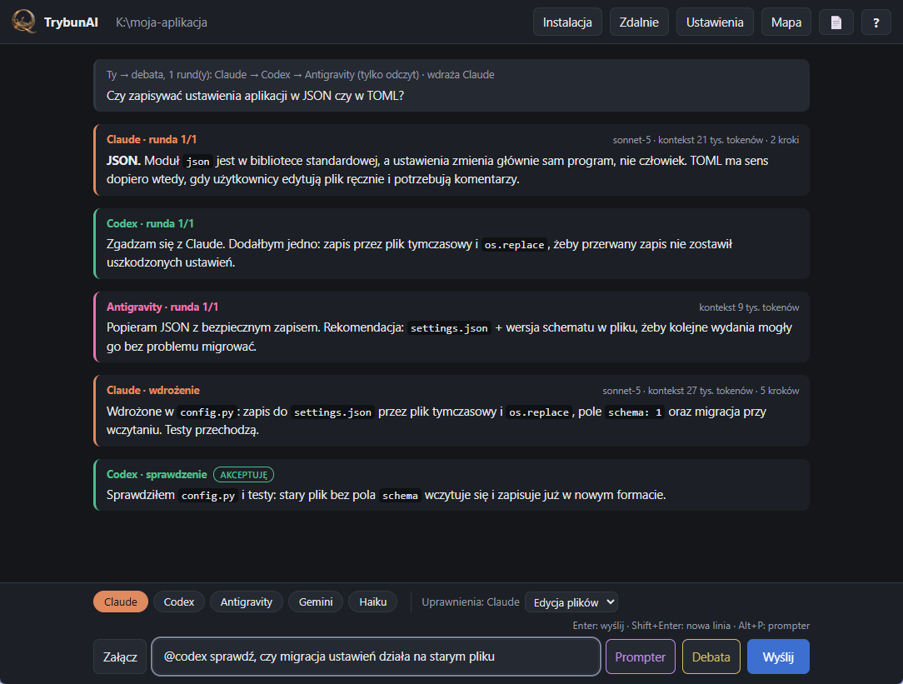
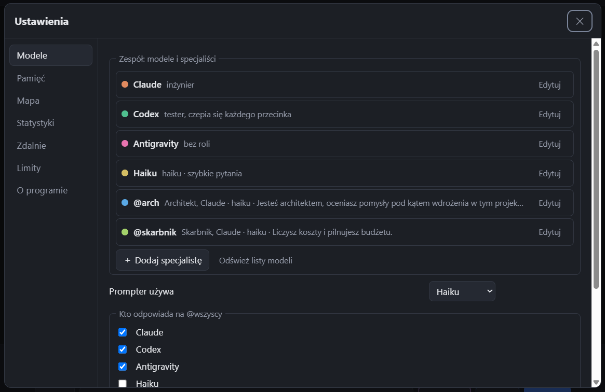

Program na Windows, który rozmawia z kilkoma modelami AI naraz w folderze Twojego projektu. Modele widzą nawzajem swoje odpowiedzi, mogą debatować, a jeden wdraża ustalenia po Twoim wyborze.
Pobierz TrybunAI.exe
Piszesz @claude, @codex, @agy, @haiku albo @wszyscy. Każdy model widzi, co napisali pozostali.
Wybierasz uczestników, liczbę rund, kto zaczyna i kto kończy. Najpierw dostajesz podsumowanie i sam zaznaczasz, co wdrożyć. Dopiero potem jeden model wdraża wybrane punkty, a reszta je sprawdza.
Zwięzłe ustalenia projektu zamiast ciągnięcia ogromnej historii. Długie sesje odświeżają się same, co mocno oszczędza limity.
Plan i zużycie limitów Claude, Codex i Antigravity w jednym miejscu. Przy każdej odpowiedzi widać rozmiar kontekstu.
Tylko odczyt, edycja plików albo pełny dostęp, osobno dla każdego modelu. Debaty zawsze tylko do odczytu.
Haiku przepisuje chaotyczną notatkę na porządny prompt, zanim go wyślesz.
Krótkie notatki o budowie projektu w .trybunai/mapa. Nowa sesja modelu zaczyna od mapy zamiast przeszukiwać cały program.
Zużycie tokenów w czasie z podziałem na modele. Liczy też sesje sprzed pierwszego uruchomienia z tą wersją.
Tekst z załączonego PDF-a trafia do prompta każdego modelu, także w trybie „Tylko czytaj”. Limit znaków ustawiasz w Ustawieniach.
Pracujący model ma na górnym pasku świecącą pigułkę w swoim kolorze: czas pracy i bieżącą czynność. Kliknięcie przewija do jego odpowiedzi, a ✕ go zatrzymuje.
Tekst odpowiedzi zaznaczysz myszą i skopiujesz jak w przeglądarce. Bloki kodu mają przycisk „Kopiuj”.
Opcjonalnie możesz sterować sesjami tego komputera z aplikacji Claude. Włącza się w Ustawieniach.
TrybunAI.exe i skopiuj go do folderu swojego projektu. Modele pracują w folderze, w którym leży exe. Jedno okno to jeden projekt; inny projekt to osobna kopia exe w jego folderze..trybunai obok exe.Przycisk Ustawienia na górnym pasku. Zakładki: Modele (role, uprawnienia, limit tekstu PDF), Pamięć, Mapa, Statystyki, Zdalnie, Limity i O programie. Pomoc jest w zakładce O programie; przycisk ? na górnym pasku otwiera ją i pokazuje kropkę, gdy jest nowsza wersja.

Pytania, pomysły, wrażenia z używania. Wystarczy konto GitHub; wpisy trafiają do Dyskusji projektu. Jeśli TrybunAI Ci się przydaje, zostaw też ⭐ na GitHubie.